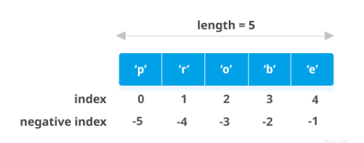
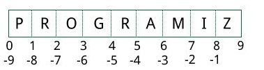
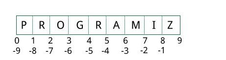
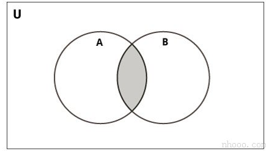
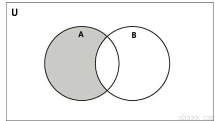
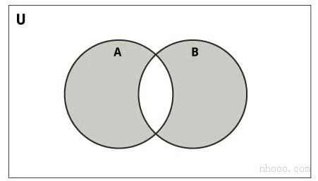

Python中的数字数据类型
Python支持整数，浮点数和复数。他们被定义为int，float和complex在Python数据类型中。
整数和浮点由存在或不存在小数点分隔。5是整数，而5.0是浮点数。
复数以形式书写x + yj，其中x是实部，y是虚部。
我们可以使用type()函数来判断变量或值属于哪种数据类型，并且可以使用函数isinstance()检查它是否属于特定的类型。
示例
| Python |
|---|
| a = 5
# 输出: <class 'int'>
print(type(a))
# 输出: <class 'float'>
print(type(5.0))
# 输出: (8+3j)
c = 5 + 3j
print(c + 3)
# 输出: True
print(isinstance(c, complex))
|
虽然整数可以是任意长度，但浮点数最多只能精确到15个小数位（第16位不准确）。
我们每天处理的数字是十进制（以10为底）的数字系统。 但是计算机程序员（通常为嵌入式程序员）需要使用二进制（基数2），十六进制（基数16）和八进制（基数8）的数字系统。
在Python中，我们可以通过在数字之前添加前缀来表示这些数字。下表列出了这些前缀。
| 编号系统 |
前缀 |
| Binary |
'0b'或'0B' |
| Octal |
'0o'或'0O' |
| Hexadecimal |
'0x'或'0X' |
这里有些示例
示例
| Python |
|---|
| # 输出: 107
print(0b1101011)
# 输出: 253 (251 + 2)
print(0xFB + 0b10)
# 输出: 13
print(0o15)
|
运行该程序时，输出为：
数据类型转换
我们可以将一种数字转换为另一种数字。这也称为强制转换。
如果操作数之一是浮点数，则加法，减法等操作会强制整数隐式（自动）浮点。
我们可以在上面看到1（整数）被强制转换为1.0（float）进行加法运算，结果也是一个浮点数。
我们还可以使用诸如的内置函数int()，float()和complex()在类型之间进行显式转换。这些函数甚至可以从字符串转换。
| Python |
|---|
| >>> int(2.3)
2
>>> int(-2.8)
-2
>>> float(5)
5.0
>>> complex('3+5j')
(3+5j)
|
从float转换为整数时，数字将被截断（接近零的整数）。
Python 小数
Python内置类float会执行一些可能令我们惊讶的计算。我们都知道1.1和2.2的总和是3.3，但是Python似乎不同意。
| Python |
|---|
| >>> (1.1 + 2.2) == 3.3
False
|
到底是怎么回事？
事实证明，浮点数在计算机硬件中以二进制分数形式实现，因为计算机仅理解二进制（0和1）。由于这个原因，我们知道的大多数十进制小数不能准确地存储在我们的计算机中。
让我们举个示例。我们不能将分数⅓表示为十进制数。这将给出0.33333333 ...无限长，我们只能对其进行近似。
原来的十进制小数0.1会导致无限长的二进制分数0.000110011001100110011 ...而我们的计算机只存储了有限数量的二进制数。
这只会接近0.1，但永远不会相等。因此，这是我们计算机硬件的局限性，而不是Python中的错误。
| Python |
|---|
| >>> 1.1 + 2.2
3.3000000000000003
|
为了克服这个问题，我们可以使用Python随附的十进制模块。浮点数的精度最高可以达到15个小数位，而十进制模块具有用户可设置的精度。
示例
| Python |
|---|
| import decimal
# 输出: 0.1
print(0.1)
# 输出: Decimal('0.1000000000000000055511151231257827021181583404541015625')
print(decimal.Decimal(0.1))
|
当我们要像在学校学习的那样进行十进制计算时，将使用此模块。
它也保留了意义。我们知道，25.50公斤比25.5公斤更准确，因为它有两位小数，而不是一位。
示例
| Python |
|---|
| from decimal import Decimal as D
# 输出: Decimal('3.3')
print(D('1.1') + D('2.2'))
# 输出: Decimal('3.000')
print(D('1.2') * D('2.50'))
|
注意上例中的尾随零。
我们可能会问，为什么不每次都执行Decimal而不是float？主要原因是效率。进行浮点运算必须比十进制运算更快。
何时使用Decimal而不是float？
在以下情况下，我们通常使用十进制。
- 当我们进行需要精确十进制表示的金融应用程序时。
- 当我们要指定所需的精度水平时。
- 当我们想实现小数位有效的概念时。
- 当我们希望像在学校一样进行运算时
Python 分数
Python通过其fractions模块提供涉及小数的运算。
小数具有分子和分母，它们都是整数。该模块支持有理数算法。
我们可以通过多种方式创建Fraction对象。
示例
| Python |
|---|
| import fractions
# 输出: 3/2
print(fractions.Fraction(1.5))
# 输出: 5
print(fractions.Fraction(5))
# 输出: 1/3
print(fractions.Fraction(1,3))
|
从float创建分数时，我们可能会得到一些异常的结果。这是由于上一节中讨论的二进制浮点数表示不完善所致。
幸运的是，小数还允许我们使用字符串示例化。这是使用十进制数字时的首选选项。
示例
| Python |
|---|
| import fractions
# 用作 float
# 输出: 2476979795053773/2251799813685248
print(fractions.Fraction(1.1))
# 用作 string
# 输出: 11/10
print(fractions.Fraction('1.1'))
|
此数据类型支持所有基本操作。这里有几个示例。
示例
| Python |
|---|
| from fractions import Fraction as F
# 输出: 2/3
print(F(1,3) + F(1,3))
# 输出: 6/5
print(1 / F(5,6))
# 输出: False
print(F(-3,10) > 0)
# 输出: True
print(F(-3,10) < 0)
|
Python 数学
Python提供了类似的模块，math和random可以执行不同的数学运算，例如三角函数，对数，概率和统计等。
示例
| Python |
|---|
| import math
# 输出: 3.141592653589793
print(math.pi)
# 输出: -1.0
print(math.cos(math.pi))
# 输出: 22026.465794806718
print(math.exp(10))
# 输出: 3.0
print(math.log10(1000))
# 输出: 1.1752011936438014
print(math.sinh(1))
# 输出: 720
print(math.factorial(6))
|
这是Python math模块中可用的完整列表函数和属性。
示例
| Python |
|---|
| import random
# 输出: 16
print(random.randrange(10,20))
x = ['a', 'b', 'c', 'd', 'e']
# 得到随机选项
print(random.choice(x))
# 打乱x列表顺序
random.shuffle(x)
# 打印输出被打乱顺序后的x
print(x)
# 打印随机元素
print(random.random())
|
输出结果（随机结果）：
| Python |
|---|
| 19
c
['e', 'a', 'd', 'c', 'b']
0.707947055817621
|
这是Python random模块中可用的完整列表函数和属性。
Python 列表（List）
如何建立列表（List）？
在Python编程中，通过将所有项目（元素）放在方括号[]中并用逗号分隔来创建列表。
它可以具有任意数量的项目，并且它们可以具有不同的类型（整数，浮点数，字符串等）。
| Text Only |
|---|
| # 空 list
my_list = []
# 整数list
my_list = [1, 2, 3]
# 具有混合数据类型的列表
my_list = [1, "Hello", 3.4]
|
同样，一个列表甚至可以将另一个列表作为项目。这称为嵌套列表。
| Text Only |
|---|
| # 嵌套 list
my_list = ["mouse", [8, 4, 6], ['a']]
|
如何访问列表中的元素？
我们可以通过多种方式访问列表的元素。
列表索引
我们可以使用索引运算符[]来访问列表中的项目。索引从0开始。因此，包含5个元素的列表的索引从0到4。
尝试访问其他元素，否则将引发IndexError。索引必须是整数。我们不能使用float或其他类型，这将导致TypeError。
使用嵌套索引访问嵌套列表。
示例
| Text Only |
|---|
| my_list = ['p','r','o','b','e']
# 输出: p
print(my_list[0])
# 输出: o
print(my_list[2])
# 输出: e
print(my_list[4])
# 错误！ 仅整数可用于索引
# my_list[4.0]
# 嵌套列表
n_list = ["Happy", [2,0,1,5]]
# 嵌套索引
# 输出: a
print(n_list[0][1])
# 输出: 5
print(n_list[1][3])
|
负索引
Python允许对其序列进行负索引。索引-1表示最后一项，-2表示倒数第二项，依此类推。
示例
| Text Only |
|---|
| my_list = ['p','r','o','b','e']
# 输出: e
print(my_list[-1])
# 输出: p
print(my_list[-5])
|

如何在Python中切片列表？
我们可以使用切片运算符（冒号：）访问列表中的一系列项目。
示例
| Text Only |
|---|
| my_list = ['p','r','o','g','r','a','m','i','z']
# 从第3元素至第5个元素
print(my_list[2:5])
# 从开始到第4个元素
print(my_list[:-5])
# 第6个元素至结束
print(my_list[5:])
# 元素开始到结束
print(my_list[:])
|
通过将索引考虑到如下所示的元素之间，切片可以得到最佳的可视化效果。如果我们想要访问一个范围，我们需要两个下标来从列表中分割那部分。

如何更改或添加元素到列表？
List是可变的，也就是说，它们的元素可以更改，而不像string或tuple。
我们可以使用赋值运算符（=）更改一个项目或一系列项目。
示例
| Text Only |
|---|
| # 值列表
odd = [2, 4, 6, 8]
# 改变第一个元素
odd[0] = 1
# 输出: [1, 4, 6, 8]
print(odd)
# 改变第2到第4项
odd[1:4] = [3, 5, 7]
# 输出: [1, 3, 5, 7]
print(odd)
|
我们可以使用append()方法将一个项目添加到列表中，或者使用extend()方法将多个项目添加到列表中。
| Text Only |
|---|
| odd = [1, 3, 5]
odd.append(7)
# 输出: [1, 3, 5, 7]
print(odd)
odd.extend([9, 11, 13])
# 输出: [1, 3, 5, 7, 9, 11, 13]
print(odd)
|
我们还可以使用+运算符组合两个列表。这也称为串联。
*运算符重复给定次数的列表。
| Text Only |
|---|
| odd = [1, 3, 5]
# 输出: [1, 3, 5, 9, 7, 5]
print(odd + [9, 7, 5])
#输出: ["re", "re", "re"]
print(["re"] * 3)
|
此外，我们可以使用insert()方法在需要的位置插入一个项，或者通过将多个项压缩到列表的一个空切片中来插入多个项。
示例
| Text Only |
|---|
| odd = [1, 9]
odd.insert(1,3)
# 输出: [1, 3, 9]
print(odd)
odd[2:2] = [5, 7]
# 输出: [1, 3, 5, 7, 9]
print(odd)
|
如何从列表中删除或删除元素？
我们可以使用关键字del从列表中删除一个或多个项。它甚至可以完全删除列表。
示例
| Text Only |
|---|
| my_list = ['p','r','o','b','l','e','m']
# 删除一项
del my_list[2]
# 输出: ['p', 'r', 'b', 'l', 'e', 'm']
print(my_list)
# 删除多个项目
del my_list[1:5]
# 输出: ['p', 'm']
print(my_list)
# 删除所有列表
del my_list
# Error: List not defined
print(my_list)
|
我们可以使用remove()方法删除给定项目，也可以使用pop()方法删除给定索引处的项目。
如果未提供索引，则pop()方法将删除并返回最后一项。这有助于我们将列表实现为堆栈（先进先出数据结构）。
我们还可以使用该clear()方法清空列表。
示例
| Text Only |
|---|
| my_list = ['p','r','o','b','l','e','m']
my_list.remove('p')
# 输出: ['r', 'o', 'b', 'l', 'e', 'm']
print(my_list)
# 输出: 'o'
print(my_list.pop(1))
# 输出: ['r', 'b', 'l', 'e', 'm']
print(my_list)
# 输出: 'm'
print(my_list.pop())
# 输出: ['r', 'b', 'l', 'e']
print(my_list)
my_list.clear()
# 输出: []
print(my_list)
|
最后，我们还可以通过为元素切片分配一个空列表来删除列表中的项目。
| Text Only |
|---|
| >>> my_list = ['p','r','o','b','l','e','m']
>>> my_list[2:3] = []
>>> my_list
['p', 'r', 'b', 'l', 'e', 'm']
>>> my_list[2:5] = []
>>> my_list
['p', 'r', 'm']
|
Python列表方法
下面列出了Python编程中list对象可用的方法。
它们以list.method()方式访问。上面已经使用了某些方法。
Python列表方法的一些示例：
示例
| Text Only |
|---|
| my_list = [3, 8, 1, 6, 0, 8, 4]
# 输出: 1
print(my_list.index(8))
# 输出: 2
print(my_list.count(8))
my_list.sort()
# 输出: [0, 1, 3, 4, 6, 8, 8]
print(my_list)
my_list.reverse()
# 输出: [8, 8, 6, 4, 3, 1, 0]
print(my_list)
|
列表理解：创建新列表的优雅方式
列表理解是从Python现有列表中创建新列表的一种简洁明了的方法。
列表理解包含一个表达式，后跟方括号内的for语句。
这是一个列出每项增加2的幂的示例。
示例
| Text Only |
|---|
| pow2 = [2 ** x for x in range(10)]
# 输出: [1, 2, 4, 8, 16, 32, 64, 128, 256, 512]
print(pow2)
|
此代码等效于
| Text Only |
|---|
| pow2 = []
for x in range(10):
pow2.append(2 ** x)
|
列表推导可以选择包含更多for或if语句。可选if语句可以过滤出新列表的项目。这里有些示例。
| Text Only |
|---|
| >>> pow2 = [2 ** x for x in range(10) if x > 5]
>>> pow2
[64, 128, 256, 512]
>>> odd = [x for x in range(20) if x % 2 == 1]
>>> odd
[1, 3, 5, 7, 9, 11, 13, 15, 17, 19]
>>> [x+y for x in ['Python ','C '] for y in ['Language','Programming']]
['Python Language', 'Python Programming', 'C Language', 'C Programming']
|
Python中的其他列表操作
列表成员资格测试
我们可以使用关键字in来测试一个项目是否存在于一个列表中。
示例
| Text Only |
|---|
| my_list = ['p','r','o','b','l','e','m']
# 输出: True
print('p' in my_list)
# 输出: False
print('a' in my_list)
# 输出: True
print('c' not in my_list)
|
遍历列表
使用for循环，我们可以遍历列表中的每个项目。
示例
| Text Only |
|---|
| for fruit in ['apple','banana','mango']:
print("I like",fruit)
|
Python 元组（Tuple）
Python中的元组类似于列表。两者之间的区别在于，一旦分配了元组，就无法更改其元素，而在列表中，可以更改元素。
创建一个元组
通过将所有项目（元素）放在括号内()（以逗号分隔）来创建元组。括号是可选的，但是，使用括号是一个好习惯。
元组可以具有任意数量的项，并且它们可以具有不同的类型（整数，浮点数，列表，字符串等）。
也可以在不使用括号的情况下创建元组。这称为元组包装。
用一个元素创建一个元组有点特殊。
只有一个元素的元组，括号内仅包含一个元素是不够的。我们将需要一个逗号结尾来表明它实际上是一个元组。
示例
| Text Only |
|---|
| my_tuple = ("hello")
print(type(my_tuple)) # <class 'str'>
# 创建一个只有一个元素的元组
my_tuple = ("hello",)
print(type(my_tuple)) # <class 'tuple'>
# 括号是可选的
my_tuple = "hello",
print(type(my_tuple)) # <class 'tuple'>
|
访问元组元素
我们可以通过多种方式访问元组的元素。
1.索引
我们可以使用索引运算符[]访问索引从0开始的元组中的项目。
因此，具有6个元素的元组将具有从0到5的索引。尝试访问元组之外的元素（例如6、7 ...）将引发IndexError。
索引必须是整数；因此我们不能使用float或其他类型。如果使用会导致TypeError。
同样，使用嵌套索引访问嵌套元组，如下面的示例所示。
| Text Only |
|---|
| my_tuple = ('p','e','r','m','i','t')
print(my_tuple[0]) # 'p'
print(my_tuple[5]) # 't'
# IndexError:列表索引超出范围
# print(my_tuple[6])
# 索引必须是整数
# TypeError: 列表索引必须是整数，而不是浮点数
# my_tuple[2.0]
# 嵌套元组
n_tuple = ("mouse", [8, 4, 6], (1, 2, 3))
# 嵌套索引
print(n_tuple[0][3]) # 's'
print(n_tuple[1][1]) # 4
|
2.负索引
Python允许对其序列进行负索引。
索引-1表示最后一项，-2表示倒数第二项，依此类推。
示例
| Text Only |
|---|
| my_tuple = ('p','e','r','m','i','t')
# 输出: 't'
print(my_tuple[-1])
# 输出: 'p'
print(my_tuple[-6])
|
3.切片
我们可以使用切片运算符-冒号“：”访问元组中的一系列项目。
示例
| Text Only |
|---|
| my_tuple = ('p','r','o','g','r','a','m','i','z')
# 第2个-4个元素
# 输出: ('r', 'o', 'g')
print(my_tuple[1:4])
# 从开始到第二个元素
# 输出: ('p', 'r')
print(my_tuple[:-7])
# 第8个元素到结尾
# 输出: ('i', 'z')
print(my_tuple[7:])
# 从开始到结尾的元素
# 输出: ('p', 'r', 'o', 'g', 'r', 'a', 'm', 'i', 'z')
print(my_tuple[:])
|
通过考虑索引位于元素之间，可以最好地可视化切片，如下所示。因此，如果要访问范围，则需要将元组中的部分切片的索引。

更换元组
与列表不同，元组是不可变的。
这意味着一旦分配了元组的元素就无法更改。但是，如果元素本身是可变的数据类型（如列表），则可以更改其嵌套项目。
我们还可以将元组分配给不同的值（重新分配）。
示例
| Text Only |
|---|
| my_tuple = (4, 2, 3, [6, 5])
# TypeError: 'tuple' 对象不支持项分配
# my_tuple[1] = 9
# 但是，可变要素的项目可以变更
my_tuple[3][0] = 9 # Output: (4, 2, 3, [9, 5])
print(my_tuple)
# 元组可以重新分配
my_tuple = ('p','r','o','g','r','a','m','i','z')
# 输出: ('p', 'r', 'o', 'g', 'r', 'a', 'm', 'i', 'z')
print(my_tuple)
|
我们可以使用+运算符来合并两个元组。这也称为串联。
我们还可以使用运算符，将元组中的元素重复*给定次数。
无论+和*操作会导致新的记录。
示例
| Text Only |
|---|
| # 串联
# 输出: (1, 2, 3, 4, 5, 6)
print((1, 2, 3) + (4, 5, 6))
# 重复
# 输出: ('Repeat', 'Repeat', 'Repeat')
print(("Repeat",) * 3)
|
删除元组
如上所述，我们不能更改元组中的元素。这也意味着我们无法删除或删除元组中的项目。
但是可以使用关键字del完全删除一个元组。
示例
| Text Only |
|---|
| my_tuple = ('p','r','o','g','r','a','m','i','z')
# 不能删除条目
# TypeError: 'tuple'对象不支持项目删除
# del my_tuple[3]
# 可以删除整个元组
del my_tuple
# NameError: 未定义名称“ my_tuple”
print(my_tuple)
|
元组方法
元组不提供添加项目或删除项目的方法。仅以下两种方法可用。
Python元组方法的一些示例：
示例
| Text Only |
|---|
| my_tuple = ('a','p','p','l','e',)
print(my_tuple.count('p')) # Output: 2
print(my_tuple.index('l')) # Output: 3
|
其他元组操作
1.元组成员资格测试
我们可以使用关键字in来测试项目是否存在于元组中。
示例
| Text Only |
|---|
| my_tuple = ('a','p','p','l','e',)
# In 操作
# 输出: True
print('a' in my_tuple)
# 输出: False
print('b' in my_tuple)
# Not in 操作
# 输出: True
print('g' not in my_tuple)
|
2.遍历元组
使用for循环，我们可以遍历元组中的每个项目。
示例
| Text Only |
|---|
| # 输出:
# Hello John
# Hello Kate
for name in ('John','Kate'):
print("Hello",name)
|
元组相比于列表的优势
由于元组与列表非常相似，因此它们在类似情况下也都使用。
但是，在列表上实现元组具有某些优点。下面列出了一些主要优点：
- 我们通常将元组用于异构（不同）数据类型，将列表用于同类（相似）数据类型。
- 由于元组是不可变的，因此遍历元组要比使用list更快。因此，性能略有提升。
- 包含不可变元素的元组可以用作字典的键。对于列表，这是不可能的。
- 如果您拥有不变的数据，则将其实现为元组将确保其保持写保护。
Python 字符串（String）
Python中的字符串是什么？
字符串是字符序列。
字符只是一个符号。例如，英语具有26个字符。
计算机不处理字符，它们处理数字（二进制）。即使您可能在屏幕上看到字符，在内部它也被存储和操纵为0和1的组合。
字符到数字的这种转换称为编码，而相反的过程是解码。ASCII和Unicode是一些常用的编码。
在Python中，字符串是Unicode字符序列。引入Unicode包括所有语言中的每个字符并带来统一的编码。您可以从此处了解有关Unicode的更多信息。
如何在Python中创建字符串？
可以通过将字符括在单引号或双引号中来创建字符串。Python中甚至可以使用三引号，但通常用于表示多行字符串和文档字符串。
示例
| Text Only |
|---|
| # 下面这些都是等价的
my_string = 'Hello'
print(my_string)
my_string = "Hello"
print(my_string)
my_string = '''Hello'''
print(my_string)
# 三引号字符串可以扩展多行
my_string = """Hello, welcome to
the world of Python"""
print(my_string)
|
运行该程序时，输出为：
| Text Only |
|---|
| Hello
Hello
Hello
Hello, welcome to
the world of Python
|
如何访问字符串中的字符？
我们可以使用索引访问单个字符，并使用切片访问一系列字符。索引从0开始。尝试访问超出索引范围的字符将引发IndexError。索引必须是整数。我们不能使用float或其他类型，这将导致TypeError。
Python允许对其序列进行负索引。
索引-1表示最后一项，-2表示倒数第二项，依此类推。我们可以使用切片运算符（冒号）访问字符串中的一系列项目。
示例
| Text Only |
|---|
| str = '(cainiaoplus.com)'
print('str = ', str)
#第一个字符
print('str[0] = ', str[0])
#最后一个字符
print('str[-1] = ', str[-1])
#切片第二到第五个字符
print('str[1:5] = ', str[1:5])
#切片从第6个到倒数第2个字符
print('str[5:-2] = ', str[5:-2])
|
输出结果：
| Text Only |
|---|
| str = (cainiaoplus.com)
str[0] = n
str[-1] = m
str[1:5] = hooo
str[5:-2] = .c
|
如果尝试访问超出范围的索引或使用十进制数，则会出现错误。
| Text Only |
|---|
| # 索引必须在范围内
>>> my_string[15]
...
IndexError: string index out of range
# 索引必须是整数
>>> my_string[1.5]
...
TypeError: string indices must be integers
|
通过考虑索引位于元素之间，可以最好地可视化切片，如下所示。
如果要访问范围，则需要索引，该索引将从字符串中切出一部分。

如何更改或删除字符串？
字符串是不可变的。这意味着字符串的元素一旦分配就无法更改。我们可以简单地将不同的字符串重新分配给相同的名称。
| Text Only |
|---|
| >>> my_string = '(cainiaoplus.com)'
>>> my_string[5] = 'a'
...
TypeError: 'str' object does not support item assignment
>>> my_string = 'Python'
>>> my_string
'Python'
|
我们不能删除或删除字符串中的字符。但是使用del关键字可以完全删除字符串。
| Text Only |
|---|
| >>> del my_string[1]
...
TypeError: 'str' object doesn't support item deletion
>>> del my_string
>>> my_string
...
NameError: name 'my_string' is not defined
|
Python字符串操作
字符串可以执行许多操作，这使它成为Python中最常用的数据类型之一。
两个或多个字符串的串联
将两个或多个字符串连接为单个字符串称为串联。
+ 运算符在Python中执行串联操作。 简单地将两个字符串文字一起编写，也可以将它们串联在一起。
*运算符可以用来重复字符串的特定次数。
示例
| Text Only |
|---|
| str1 = 'Hello'
str2 ='World!'
# using +
print('str1 + str2 = ', str1 + str2)
# using *
print('str1 * 3 =', str1 * 3)
|
一起编写两个字符串文字也会像+运算符一样将它们串联在一起。
如果要在不同的行中连接字符串，可以使用括号。
| Text Only |
|---|
| >>> # 两个字符串文本在一起
>>> 'Hello ''World!'
'Hello World!'
>>> # 使用括号
>>> s = ('Hello '
... 'World')
>>> s
'Hello World'
|
遍历字符串
使用for循环，我们可以遍历字符串。这是一个计算字符串中“ l”数的示例。
示例
| Text Only |
|---|
| count = 0
for letter in 'Hello World':
if(letter == 'l'):
count += 1
print(count,'letters found')
|
字符串成员资格测试
我们可以使用in关键字来测试字符串中是否存在子字符串。
| Text Only |
|---|
| >>> 'a' in 'program'
True
>>> 'at' not in 'battle'
False
|
使用Python的内置函数
可以使用sequence和string的各种内置函数。
一些常用的是enumerate()和len()。enumerate()函数的作用是:返回一个枚举对象。它以对的形式包含字符串中所有项的索引和值。这对于迭代很有用。
同样，len()返回字符串的长度（字符数）。
示例
| Text Only |
|---|
| str = 'cold'
# enumerate()
list_enumerate = list(enumerate(str))
print('list(enumerate(str) = ', list_enumerate)
#字符数
print('len(str) = ', len(str))
|
Python字符串格式
转义序列
如果我们想打印一个文本-他说：“What's there？”-我们不能使用单引号或双引号。这将导致SyntaxError文本本身包含单引号和双引号。
| Text Only |
|---|
| >>> print("He said, "What's there?"")
...
SyntaxError: invalid syntax
>>> print('He said, "What's there?"')
...
SyntaxError: invalid syntax
|
解决此问题的一种方法是使用三引号。另外，我们可以使用转义序列。
转义序列以反斜杠开头，并且以不同的方式解释。如果我们使用单引号表示字符串，则必须对字符串内的所有单引号进行转义。双引号也是如此。这是表示上述文本的方法。
示例
| Text Only |
|---|
| # 使用三个单引号
print('''He said, "What's there?"''')
# 转义单引号
print('He said, "What\'s there?"')
# 转义双引号
print("He said, \"What's there?\"")
|
这是Python支持的所有转义序列的列表。
| 转义序列 |
描述 |
| \newline |
反斜杠和换行符被忽略 |
| \ |
反斜杠 |
| \' |
单引号 |
| \" |
双引号 |
| \a |
ASCII铃声 |
| \b |
ASCII退格键 |
| \f |
ASCII换页 |
| \n |
ASCII换行 |
| \r |
ASCII回车 |
| \t |
ASCII水平制表符 |
| \v |
ASCII垂直制表符 |
| \ooo |
具有八进制值的字符 |
| \xHH |
具有十六进制值HH的字符 |
这里有些示例
| Text Only |
|---|
| >>> print("C:\\Python32\\Lib")
C:\Python32\Lib
>>> print("This is printed\nin two lines")
This is printed
in two lines
>>> print("This is \x48\x45\x58 representation")
This is HEX representation
|
原始字符串忽略转义序列
有时我们可能希望忽略字符串中的转义序列。为此，我们可以将其放置在字符串的前面r或R前面。这意味着这是一个原始字符串，并且其中的任何转义序列都将被忽略。
| Text Only |
|---|
| >>> print("This is \x61 \ngood example")
This is a
good example
>>> print(r"This is \x61 \ngood example")
This is \x61 \ngood example
|
与string对象一起使用的format()方法非常通用，并且在格式化字符串方面功能非常强大。格式字符串包含大括号{}作为占位符或被替换的替换字段。
我们可以使用位置参数或关键字参数来指定顺序。
示例
| Text Only |
|---|
| # 默认（隐式）顺序
default_order = "{}, {} and {}".format('John','Bill','Sean')
print('\n--- Default Order ---')
print(default_order)
# 使用位置参数排序
positional_order = "{1}, {0} and {2}".format('John','Bill','Sean')
print('\n--- Positional Order ---')
print(positional_order)
# 使用关键字参数的排序
keyword_order = "{s}, {b} and {j}".format(j='John',b='Bill',s='Sean')
print('\n--- Keyword Order ---')
print(keyword_order)
|
format()方法可以具有可选的格式规范。它们使用冒号与字段名称分开。例如，我们可以在给定的空间中左对齐<，右对齐>或^将字符串居中。我们还可以将整数格式化为二进制，十六进制等，并且浮点数可以四舍五入或以指数格式显示。您可以使用大量的格式。请访问此处以获取该format()方法可用的所有字符串格式。
| Text Only |
|---|
| >>> # 格式化整数
>>> "Binary representation of {0} is {0:b}".format(12)
'Binary representation of 12 is 1100'
>>> # 格式化浮点数
>>> "Exponent representation: {0:e}".format(1566.345)
'Exponent representation: 1.566345e+03'
>>> # 四舍五入
>>> "One third is: {0:.3f}".format(1/3)
'One third is: 0.333'
>>> # 字符串对齐
>>> "|{:<10}|{:^10}|{:>10}|".format('butter','bread','ham')
'|butter | bread | ham|'
|
旧样式格式
我们甚至可以像sprintf()在C编程语言中使用的旧样式一样格式化字符串。我们使用%运算符来完成此任务。
| Text Only |
|---|
| >>> x = 12.3456789
>>> print('The value of x is %3.2f' %x)
The value of x is 12.35
>>> print('The value of x is %3.4f' %x)
The value of x is 12.3457
|
常见的Python字符串方法
字符串对象有许多可用的方法。上面提到的format()方法就是其中之一。常用的方法有lower()、upper()、join()、split()、find()、replace()等。这里是所有的完整列表中在Python中处理字符串的内置方法。
| Text Only |
|---|
| >>> "nhooo".lower()
'nhooo'
>>> "nhooo".upper()
'NHOOO'
>>> "This will split all words into a list".split()
['This', 'will', 'split', 'all', 'words', 'into', 'a', 'list']
>>> ' '.join(['This', 'will', 'join', 'all', 'words', 'into', 'a', 'string'])
'This will join all words into a string'
>>> 'Happy New Year'.find('ew')
7
>>> 'Happy New Year'.replace('Happy','Brilliant')
'Brilliant New Year'
|
Python 集合（Set）
Python中的集合是什么？
集合是项目的无序集合。每个元素都是唯一的（没有重复项），并且必须是不可变的（不能更改）。
但是，集合本身是可变的。我们可以在其中添加或删除项目。
集合可用于执行数学集合运算，例如并集，交集，对称差等。
如何创建集合？
通过将所有项目（元素）放在大括号{}中并用逗号分隔或使用内置函数来创建集合set()。
它可以具有任意数量的项目，并且它们可以具有不同的类型（整数，浮点数，元组，字符串等）。但是集合不能具有可变元素（例如list，set或dictionary）作为其元素。
示例
| Text Only |
|---|
| # 整数集
my_set = {1, 2, 3}
print(my_set)
# 混合数据类型集
my_set = {1.0, "Hello", (1, 2, 3)}
print(my_set)
|
也尝试以下示例。
示例
| Text Only |
|---|
| # 无重复集合
# 输出: {1, 2, 3, 4}
my_set = {1,2,3,4,3,2}
print(my_set)
#set不能包含可变项
#这里[3，4]是可变列表
#如果您取消注释第12行，
#这将导致错误。
# TypeError: unhashable type: 'list'
#my_set = {1, 2, [3, 4]}
# 我们可以从列表中生成集合
# 输出: {1, 2, 3}
my_set = set([1,2,3,2])
print(my_set)
|
创建一个空集有点特殊。
空括号{}将在Python中创建一个空字典。为了建立一个没有任何元素的集合，我们使用没有任何参数的set()函数。
示例
| Text Only |
|---|
| # 用{}初始化
a = {}
# 检查a的数据类型
# 输出: <class 'dict'>
print(type(a))
# 初始化使用 set()
a = set()
# 检查a的数据类型
# 输出: <class 'set'>
print(type(a))
|
如何在Python中更改集合？
集是可变的。但是由于它们是无序的，因此索引没有意义。
我们无法使用索引或切片来访问或更改集合的元素。集不支持它。
我们可以使用add()方法添加单个元素，使用update()方法添加多个元素。update()方法可以采用元组，列表，字符串或其他集合作为其参数。在所有情况下，都避免重复。
示例
| Text Only |
|---|
| # 初始化 my_set
my_set = {1,3}
print(my_set)
# 如果取消注释第9行，
# 你会得到一个错误
# TypeError: 'set' object does not support indexing
#my_set[0]
# 增加一个元素
# 输出: {1, 2, 3}
my_set.add(2)
print(my_set)
# 增加多个元素
# 输出: {1, 2, 3, 4}
my_set.update([2,3,4])
print(my_set)
# 增加 list 和set
# 输出: {1, 2, 3, 4, 5, 6, 8}
my_set.update([4,5], {1,6,8})
print(my_set)
|
运行该程序时，输出为：
| Text Only |
|---|
| {1, 3}
{1, 2, 3}
{1, 2, 3, 4}
{1, 2, 3, 4, 5, 6, 8}
|
如何从集合中删除元素？
可以使用discard()和remove()方法从集合中删除特定项目。
两者之间的唯一区别是，如果使用discard()，而项目不存在于集合中，则它保持不变。但是remove()在这种情况下会引发错误。
以下示例将说明这一点。
示例
| Text Only |
|---|
| # 初始化 my_set
my_set = {1, 3, 4, 5, 6}
print(my_set)
# 抛弃一个元素
# 输出: {1, 3, 5, 6}
my_set.discard(4)
print(my_set)
# 移除已个元素
# 输出: {1, 3, 5}
my_set.remove(6)
print(my_set)
# 抛弃一个元素
# 没有出现在 my_set
# 输出: {1, 3, 5}
my_set.discard(2)
print(my_set)
# remove一个元素
# 没有出现在 my_set
# 如果没有注释#my_set.remove(2),
# 会抛出一个错误.
# Output: KeyError: 2
#my_set.remove(2)
|
同样，我们可以使用pop()方法删除并返回一个项目。
集合为无序，无法确定将弹出哪个项目。这是完全任意的。
我们还可以使用clear()方法删除集合中的所有项目。
示例
| Text Only |
|---|
| # 初始化 my_set
# 输出: 唯一元素集
my_set = set("HelloWorld")
print(my_set)
# pop一个元素
# 输出: 随机元素
print(my_set.pop())
# pop 任意元素
# Output:随机元素
my_set.pop()
print(my_set)
# 清空 my_set
#输出: set()
my_set.clear()
print(my_set)
|
Python 集合操作
集合可用于执行数学集合运算，例如并集，交集，差和对称差。我们可以通过运算符或方法来实现。。
让我们考虑以下两组用于以下操作。
| Text Only |
|---|
| >>> A = {1, 2, 3, 4, 5}
>>> B = {4, 5, 6, 7, 8}
|
集合并集

A和B的并集是来自这两个集合的所有元素的集合。
并集是使用|操作符执行的。也可以使用union()方法来完成。
示例
| Text Only |
|---|
| # 初始化 A 和 B
A = {1, 2, 3, 4, 5}
B = {4, 5, 6, 7, 8}
# 使用 | 运算符
# 输出: {1, 2, 3, 4, 5, 6, 7, 8}
print(A | B)
|
在Python shell上尝试以下示例。
| Text Only |
|---|
| # 使用union 函数
>>> A.union(B)
{1, 2, 3, 4, 5, 6, 7, 8}
# 在B上使用并集函数
>>> B.union(A)
{1, 2, 3, 4, 5, 6, 7, 8}
|
集合相交

A和B的交集是在这两个集合中共有的一组元素。
交点使用&运算符执行。使用intersection()方法可以完成相同的操作。
示例
| Text Only |
|---|
| # 初始化 A 和 B
A = {1, 2, 3, 4, 5}
B = {4, 5, 6, 7, 8}
# 使用 & 运算符
# 输出 : {4, 5}
print(A & B)
|
在Python shell上尝试以下示例。
| Text Only |
|---|
| # 在A上使用交集函数
>>> A.intersection(B)
{4, 5}
# 在B上使用交集函数
>>> B.intersection(A)
{4, 5}
|
集合差异

A和B的差（A-B）是仅在A中但不在B中的一组元素。类似地，B-A是B中但不在A中的一组元素。
差异是使用 -运算符执行的。使用difference()方法可以完成相同的操作。
示例
| Text Only |
|---|
| # 初始化 A 和 B
A = {1, 2, 3, 4, 5}
B = {4, 5, 6, 7, 8}
# 在A上使用 - 运算符
# Output: {1, 2, 3}
print(A - B)
|
在Python shell上尝试以下示例。
| Text Only |
|---|
| # 在A上使用差异函数
>>> A.difference(B)
{1, 2, 3}
# 在B上使用-运算符符
>>> B - A
{8, 6, 7}
# 在B上使用差异函数
>>> B.difference(A)
{8, 6, 7}
|
集合对称差异

A和B的对称差异是A和B中的一组元素，但两者中的元素相同。
对称差使用^运算符执行。使用symmetric_difference()方法可以完成相同的操作。
示例
| Text Only |
|---|
| # 初始化 A 和 B
A = {1, 2, 3, 4, 5}
B = {4, 5, 6, 7, 8}
# 使用 ^ 运算符
# 输出: {1, 2, 3, 6, 7, 8}
print(A ^ B)
|
在Python shell上尝试以下示例。
| Text Only |
|---|
| # 在A上使用symmetric_difference函数
>>> A.symmetric_difference(B)
{1, 2, 3, 6, 7, 8}
# 在B上使用symmetric_difference函数
>>> B.symmetric_difference(A)
{1, 2, 3, 6, 7, 8}
|
不同的Python集合方法
集合方法很多，上面已经使用了其中的一些方法。这是set对象可用的所有方法的列表。
其他集合操作
集合会员资格测试
我们可以使用in关键字来测试项目是否存在于集合中。
示例
| Text Only |
|---|
| # 初始化 my_set
my_set = set("apple")
# 检查“a”是否存在
# 输出: True
print('a' in my_set)
# 检查“p”是否存在
# 输出: False
print('p' not in my_set)
|
遍历集合
使用for循环，我们可以遍历集合中的每个项目。
| Text Only |
|---|
| >>> for letter in set("apple"):
... print(letter)
...
a
p
e
l
|
集合与内置函数
内置函数如all()、any()、enumerate()、len()、max()、min()、sort()、sum()等常用来与set一起执行不同的任务。
| 功能 |
描述 |
| all() |
如果集合的所有元素都为true（或者集合为空），则返回True。 |
| any() |
如果集合中的任何元素为true，则返回True。 如果集合为空，则返回False。 |
| enumerate() |
返回一个枚举对象。它包含成对的所有项的索引和值。 |
| len() |
返回集合中的长度（项目数）。 |
| max() |
返回集合中最大的项目。 |
| min() |
返回集合中最小的项目。 |
| sorted() |
从集合中的元素返回一个新的排序列表（不对集合本身进行排序）。 |
| sum() |
返回集合中所有元素的总和。 |
Python Frozenset
Frozenset是具有集合特征的新类，但是一旦分配，就不能更改其元素。元组是不可变列表，而冻结集是不可变集。
可变的集合不可散列，因此不能用作字典键。另一方面，frozenset是可哈希化的，可用作字典的键。
可以使用函数Frozenset()创建Frozensets。
此数据类型支持的方法，如copy()，difference()，intersection()，isdisjoint()，issubset()，issuperset()，symmetric_difference()和union()。由于不可变，因此没有添加或删除元素的方法。
示例
| Text Only |
|---|
| # 初始化 A 和 B
A = frozenset([1, 2, 3, 4])
B = frozenset([3, 4, 5, 6])
|
在Python shell上尝试这些示例。
| Text Only |
|---|
| >>> A.isdisjoint(B)
False
>>> A.difference(B)
frozenset({1, 2})
>>> A | B
frozenset({1, 2, 3, 4, 5, 6})
>>> A.add(3)
...
AttributeError: 'frozenset' object has no attribute 'add'
|
Python 字典（Dictionary）
Python中的字典是什么？
Python字典是一个无序的项集合。其他复合数据类型只有值作为元素，而字典有一个键:值对（key：value）。
字典被优化以在键已知时检索值。
如何创建字典？
创建字典就像将项目放在用逗号分隔的大括号{}中一样简单。
一个项目具有一个键和对应的值，表示为一对，键：值。
尽管值可以是任何数据类型并且可以重复，但是键必须是不可变的类型（具有不可变元素的字符串，数字或元组）并且必须是唯一的。
| Text Only |
|---|
| # 空字典
my_dict = {}
# 带有整数键的字典
my_dict = {1: 'apple', 2: 'ball'}
# 混合键字典
my_dict = {'name': 'John', 1: [2, 4, 3]}
# 使用 dict()
my_dict = dict({1:'apple', 2:'ball'})
# 将每个项作为一对的序列
my_dict = dict([(1,'apple'), (2,'ball')])
|
如您在上面看到的，我们还可以使用内置函数dict()创建字典。
如何从字典中访问元素？
虽然索引与其他容器类型一起使用来访问值，但是字典使用键。键可以在方括号内或与get()方法一起使用。
使用get()的区别在于，如果没有找到密钥，它将返回None，而不是KeyError。
运行该程序时，输出为：
如何更改或添加字典中的元素？
字典是可变的。我们可以使用赋值运算符添加新项目或更改现有项目的值。
如果键已经存在，则值将更新，否则将新键：值对添加到字典中。
运行该程序时，输出为：
| Text Only |
|---|
| {'name': 'Jack', 'age': 27}
{'name': 'Jack', 'age': 27, 'address': 'Downtown'}
|
如何从字典中删除或删除元素？
我们可以使用pop()方法删除字典中的特定项目。此方法使用提供的键作为项移除，并返回值。
方法popitem()可用于从字典中删除并返回任意项（键，值）。使用clear()方法可以一次删除所有项目。
我们还可以使用del关键字删除单个项目或整个字典本身。
运行该程序时，输出为：
| Text Only |
|---|
| 16
{1: 1, 2: 4, 3: 9, 5: 25}
(1, 1)
{2: 4, 3: 9, 5: 25}
{2: 4, 3: 9}
{}
|
Python字典方法
以下列出了词典可用的方法。在上面的示例中已经使用了其中一些。
以下是使用这些方法的一些示例。
| Text Only |
|---|
| marks = {}.fromkeys(['Math','English','Science'], 0)
# 输出: {'English': 0, 'Math': 0, 'Science': 0}
print(marks)
for item in marks.items():
print(item)
# 输出: ['English', 'Math', 'Science']
list(sorted(marks.keys()))
|
Python 字典理解
字典理解是从Python中的迭代器创建新字典的一种优雅简洁的方法。
字典理解包含一个表达式对（键：值），后跟花括号{}中的for语句。
这是制作字典的示例，其中每个项目都是一对数字及其平方。
| Text Only |
|---|
| squares = {x: x*x for x in range(6)}
# 输出: {0: 0, 1: 1, 2: 4, 3: 9, 4: 16, 5: 25}
print(squares)
|
此代码等效于
| Text Only |
|---|
| squares = {}
for x in range(6):
squares[x] = x*x
|
字典理解可以选择包含更多for或if语句。
可选if语句可以过滤出项以形成新字典。
这是一些仅包含奇数项目的字典示例。
| Text Only |
|---|
| odd_squares = {x: x*x for x in range(11) if x%2 == 1}
# 输出: {1: 1, 3: 9, 5: 25, 7: 49, 9: 81}
print(odd_squares)
|
要了解更多信息，请访问Python字典理解。
其他词典操作
字典成员资格测试
我们可以使用关键字来测试键是否在字典中in。请注意，成员资格测试仅适用于键，而不适用于值。
| Text Only |
|---|
| squares = {1: 1, 3: 9, 5: 25, 7: 49, 9: 81}
# 输出: True
print(1 in squares)
# 输出: True
print(2 not in squares)
# 仅对键而不是值进行成员资格测试
# 输出: False
print(49 in squares)
|
遍历字典
使用for循环，我们可以遍历字典中的每个键。
| Text Only |
|---|
| squares = {1: 1, 3: 9, 5: 25, 7: 49, 9: 81}
for i in squares:
print(squares[i])
|
内置字典函数
内置函数如all()、any()、len()、cmp()、sort()等通常与dictionary一起用于执行不同的任务。
| 功能 |
描述 |
| all() |
如果字典的所有键都为true（或者字典为空），则返回True。 |
| any() |
如果字典的任何键为true，则返回True。 如果字典为空，则返回False。 |
| len() |
返回字典中的长度（项目数）。 |
| cmp() |
比较两个字典的项目。 |
| sorted() |
返回字典中新排序的键列表。 |
以下是一些使用内置函数来处理字典的示例。
| Text Only |
|---|
| squares = {1: 1, 3: 9, 5: 25, 7: 49, 9: 81}
# 输出: 5
print(len(squares))
# 输出: [1, 3, 5, 7, 9]
print(sorted(squares))
|
Python 集合方法
Set是项目的无序集合。Set项是惟一且不可变的。在这个参考页面中，您将找到一个set对象可以使用的所有方法。
在我们的 Python 集合教程 中学习更多有关集合的知识。